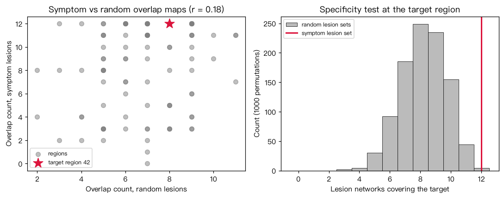

Example10 / 10
病变网络映射（LNM）的原理与特异性检验
用模拟的“规范连接组”：100 个脑区，FC 由少数几个共享成分 + 噪声产生，其中第 0 个成分方差最大（全脑主轴）。 设 A 组 12 个“病灶”位置各不相同，但都与目标区 T 有较强 FC；B 组为 12 个随机位置的病灶。 LNM：取每个病灶区与全脑的 FC 向量（病灶网络），二值化（|r| 大于阈值）后叠加，得到重叠图。 输出解读：A 组的重叠图在目标区 T 处排名第一，置换检验显著；但随机病灶也覆盖了目标区的大部分， 而且两组的平均病灶网络与 FC 第一主成分的相关同样高——叠加 FC 行向量会反复取样同一个连接组的主轴， 这正是 van den Heuvel 等（2026）对 LNM 特异性的质疑。 因此必须与对照病灶组比较（特异性检验），而不只报告重叠峰。
Output输出图

Output文字输出
症状组：目标区 42 被 12/12 个病灶网络覆盖，在 100 个区域中排第 1 随机组：目标区被 8/12 个病灶网络覆盖，排第 25 两组重叠图之间的相关 = 0.179 症状组平均病灶网络与 FC 第一主成分的 |相关| = 0.769 随机组平均病灶网络与 FC 第一主成分的 |相关| = 0.791 目标区覆盖数的置换 p 值 = 0.005
Code代码
# 用模拟的“规范连接组”：100 个脑区，FC 由少数几个共享成分 + 噪声产生，其中第 0 个成分方差最大（全脑主轴）。
# 设 A 组 12 个“病灶”位置各不相同，但都与目标区 T 有较强 FC；B 组为 12 个随机位置的病灶。
# LNM：取每个病灶区与全脑的 FC 向量（病灶网络），二值化（|r| 大于阈值）后叠加，得到重叠图。
# 输出解读：A 组的重叠图在目标区 T 处排名第一，置换检验显著；但随机病灶也覆盖了目标区的大部分，
# 而且两组的平均病灶网络与 FC 第一主成分的相关同样高——叠加 FC 行向量会反复取样同一个连接组的主轴，
# 这正是 van den Heuvel 等（2026）对 LNM 特异性的质疑。
# 因此必须与对照病灶组比较（特异性检验），而不只报告重叠峰。
import numpy as np
rng = np.random.default_rng(5) # 模拟数据，仅用于演示方法
N, T, K = 100, 600, 5
load = rng.standard_normal((N, K)) * np.array([1.0, 0.9, 0.9, 0.7, 0.7])
load[:, 0] = np.abs(load[:, 0]) + 0.3 # 第 0 个成分：全脑同号的主轴（类似全局信号/主梯度）
X = load @ rng.standard_normal((K, T)) + rng.standard_normal((N, T))
R = np.corrcoef(X)
np.fill_diagonal(R, 0)
target = 42
cand = np.argsort(R[target])[::-1]
lesions_A = cand[:12] # 与目标区 FC 最强的 12 个区域作为“症状组”病灶
lesions_B = rng.choice(np.setdiff1d(np.arange(N), [target]), 12, replace=False)
def overlap(lesions, thr=0.25):
return (np.abs(R[lesions]) > thr).sum(0)
ovA, ovB = overlap(lesions_A), overlap(lesions_B)
rankA = int((ovA > ovA[target]).sum()) + 1
rankB = int((ovB > ovB[target]).sum()) + 1
print(f"症状组：目标区 {target} 被 {ovA[target]}/12 个病灶网络覆盖，在 {N} 个区域中排第 {rankA}")
print(f"随机组：目标区被 {ovB[target]}/12 个病灶网络覆盖，排第 {rankB}")
print("两组重叠图之间的相关 =", round(np.corrcoef(ovA, ovB)[0, 1], 3))
w, V = np.linalg.eigh(R)
pc1 = V[:, -1]
mapA = R[lesions_A].mean(0)
mapB = R[lesions_B].mean(0)
print("症状组平均病灶网络与 FC 第一主成分的 |相关| =", round(abs(np.corrcoef(mapA, pc1)[0, 1]), 3))
print("随机组平均病灶网络与 FC 第一主成分的 |相关| =", round(abs(np.corrcoef(mapB, pc1)[0, 1]), 3))
# 特异性检验：在目标区上，症状组覆盖数是否超过 1000 组随机病灶的分布
null = np.array([overlap(rng.choice(np.setdiff1d(np.arange(N), [target]), 12, replace=False))[target]
for _ in range(1000)])
print("目标区覆盖数的置换 p 值 =", round((np.sum(null >= ovA[target]) + 1) / 1001, 4))
import matplotlib.pyplot as plt
fig, axes = plt.subplots(1, 2, figsize=(10, 4))
axes[0].scatter(ovB, ovA, s=40, color="gray", alpha=0.5, label="regions")
axes[0].scatter(ovB[target], ovA[target], s=200, marker="*", color="crimson", label=f"target region {target}")
axes[0].set(xlabel="Overlap count, random lesions", ylabel="Overlap count, symptom lesions",
title=f"Symptom vs random overlap maps (r = {np.corrcoef(ovA, ovB)[0, 1]:.2f})")
axes[0].legend(fontsize=8)
axes[1].hist(null, bins=np.arange(-0.5, 13.5), color="#BBBBBB", edgecolor="k", lw=0.5, label="random lesion sets")
axes[1].axvline(ovA[target], color="crimson", lw=2, label="symptom lesion set")
axes[1].set(xlabel="Lesion networks covering the target", ylabel="Count (1000 permutations)",
title="Specificity test at the target region")
axes[1].legend(fontsize=8)
plt.tight_layout(); plt.show()Run在浏览器中运行
首次加载 Python 环境约需 20–40 秒；可以修改参数后重新运行。